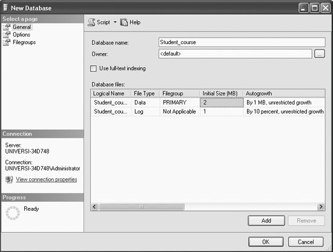

|
|
|
1.2. Creating a Database in Microsoft SQL ServerBefore we begin to work with Microsoft SQL Server , we will create a database. To create a database, as shown in Figure 1-4, right click on Databases in the Object Explorer and select New Database... from the context menu.
Figure 1-4. Creating a New DatabaseYou will get the New Database dialog box, as shown in Figure 1-5. We will create a database called Student_course.
Figure 1-5. Typing in the database nameType in your database name as Student_course. You may leave the Owner as <default > for now, as shown in Figure 1-5. Click OK. You will get the screen shown in Figure 1-6.
Figure 1-6. The Student_course database
The Student_course database has now been created. Note the newly created Student_course database icon under the Summary tab on the righthand side of the screen below Databases (see Figure 1-6). In order to view the Student_course database under the Object Explorer (on the left side of your screen) right away, you may have to first right-click on the Databases node and then select Refresh. Then, as shown in Figure 1-6, you may now expand the Databases node by clicking on the + sign beside Databases under the Object Explorer, and you also will see the Student_course database node under and Databases (under the Object Explorer on the left portion of your screen), as shown in Figure 1-7. 1.2.1. Objects in the Student_course DatabaseA SQL Server database is a collection of many objects, such as tables, views, and synonyms, defined to support activities performed with data. From Figure 1-7, expand the Student_course database node by clicking on the + sign beside the Student_course node, and you will get the screen shown in Figure 1-8, which shows the default objects that are in the Student_course database. 1.2.2. Default Tables in the Student_course DatabaseA database is a collection of related tables. So far we have created the Student_course database, but we have not created any tables.
Figure 1-7. The Student_course database under the Object Explorer
Figure 1-8. Viewing the Objects in the Student_course databaseTo view the default tables in the Student_course database, expand the Tables node (as shown in Figure 1-9), and the only default table in the Student_course database, System Tables, will be displayed.
Figure 1-9. System tables in the Student_coursedatabaseAt this point you may click on the - sign beside the Tables node, and then on the - sign beside the Student_course node to close those up, and you will get back to Figure 1-7. 1.2.3. Default System DatabasesSQL Server comes with some default System databases--master, model, msdb, and tempdb. To view these default database nodes, expand the Database node and then System Databases node, as shown in Figure 1-10, and you will be able to see the default System databases.
Figure 1-10. Default System Databasesmaster is a database composed of system tables that keeps track of server installation as a whole and all other databases that are subsequently created. The SQL Server Management Studio query window defaults to the master database context. Any queries executed from the query window will execute in the master database unless you change the context. model is a template database. Every time a new database is created, SQL Server makes a copy of the model database (and all of the objects in it) to form the basis of the new database. If you want all your new databases to inherit certain properties, you could include these properties and objects in your model database. msdb is a database that contains the metadata and database objects used by the SQL Server agent that performs scheduled activities such as backups and replication tasks. tempdb is a temporary database or workspace recreated every time SQL Server is restarted. tempdb is used for temporary tables created by users and to hold intermediate results created internally by SQL Server during query processing and sorting. |
|
|
|